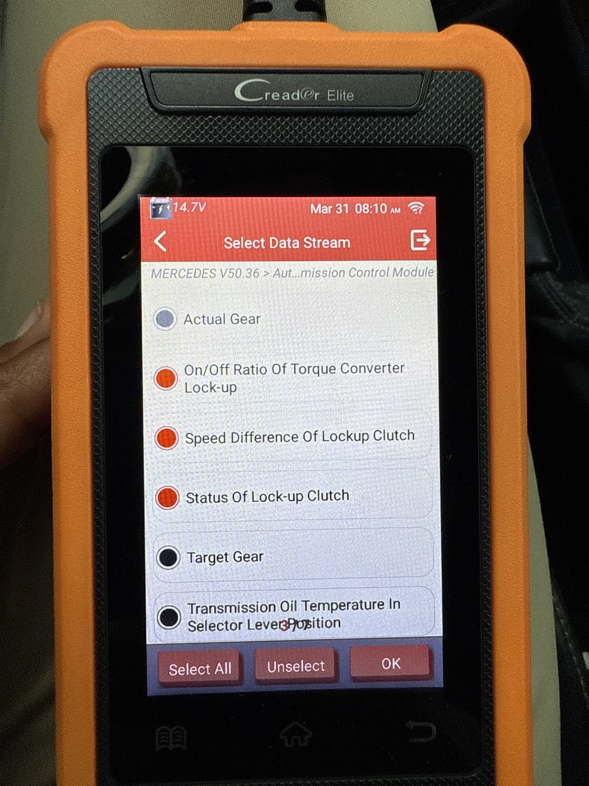
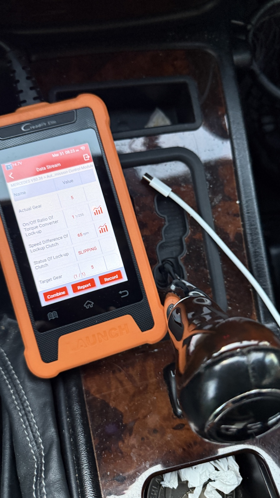

Page 4: Road test and live-data interpretation
This page is for confirming whether the rumble is torque-converter clutch shudder. Your own live-data screenshot already points strongly in that direction.


How to run the test
- Warm up the vehicle fully.
- Select these PIDs: actual gear, on/off ratio of torque-converter lock-up, speed difference of lockup clutch, status of lock-up clutch, and transmission temp if available.
- Drive at about 40–60 mph on a flat road with light steady throttle.
- When the rumble happens, note the lock-up status and speed difference.
- For extra confirmation, lightly tap the brake with your left foot to force unlock. If the rumble disappears immediately, that strongly supports TCC shudder.
How to read the result
| Reading | Interpretation |
|---|---|
| Locked, 0–20 rpm slip | Normal |
| Slipping, 50+ rpm during rumble | Strong evidence of torque-converter clutch shudder |
| Rumble disappears when brake tap forces unlock | Extra confirmation of TCC involvement |
| No change in TCC slip but rumble persists | Pivot back toward driveline / transfer-case investigation |
Your screenshot showing gear 5, 65 rpm speed difference, and lock-up status = SLIPPING during the rumble is a strong hit for torque-converter clutch shudder.